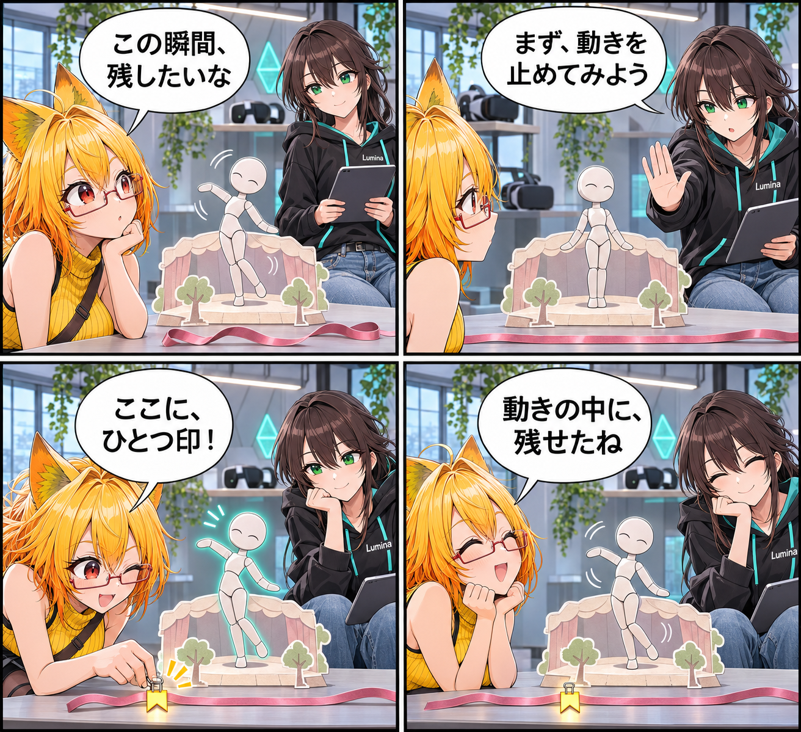

2026.11.09 / Development Log / Feature Spotlight
閑話休題：動きの途中に、ひとつ印をつける
新規実装の報告ではなく、VRASに既にあるDesktop VAC編集を紹介します。動きの途中にキーを置き、残したい一瞬を少しずつ調整できます。
今回は feature-spotlight（機能紹介） です。集計期間は2026-11-08 03:00:00 JSTから2026-11-09 02:59:59 JSTまで、対象はViewerの
main です。集計終了時点のHEADは aa5c7bc823b013fdfc622ec1d7aa1b85c9da8e5e、期間内コミットは0件でした。MainScene.unity の未コミット差分は、期間内に実装された事実を確定できないため実績には含めていません。
一瞬を、タイムラインに置く
VRASのDesktopには、保存済みのVACモーションを開いて編集できる作業画面があります。BoneやRoot位置のキーをタイムライン上で調整し、残したい一瞬を動きの中へ置いていけます。
試して、戻して、明示的に残す
編集した動きはプレビューで確認でき、Undo/Redoで前後の調整もできます。保存は自動ではなく、納得したタイミングで明示的に行います。編集を始める際は対象アバターの待機モーションを止め、狙った動きを安定して扱えるようにしています。
今回の紹介範囲
Kinema歩行をVACへベイクする既存の経路もありますが、すべてのアバターでの互換性や操作性の最終確認は別扱いです。今回は、Desktopでモーションの一部を選び、キーとして調整・確認・保存する基本の流れに絞りました。新しいリリースや当日実装、実機検証を示す記事ではありません。
4コマの話
揺れる小さな舞台をいったん静かにして、ろひがリボンに一つの印を留めます。最後に同じ腕の動きがもう一度現れて、「残したい瞬間」が動きの中に居場所を見つけるお話です。
まとめ
VRASのVAC編集は、アバターのモーションを細かく見直したいときの既存機能です。タイムライン上の一つのキーから、動きの印象を少しずつ選べます。